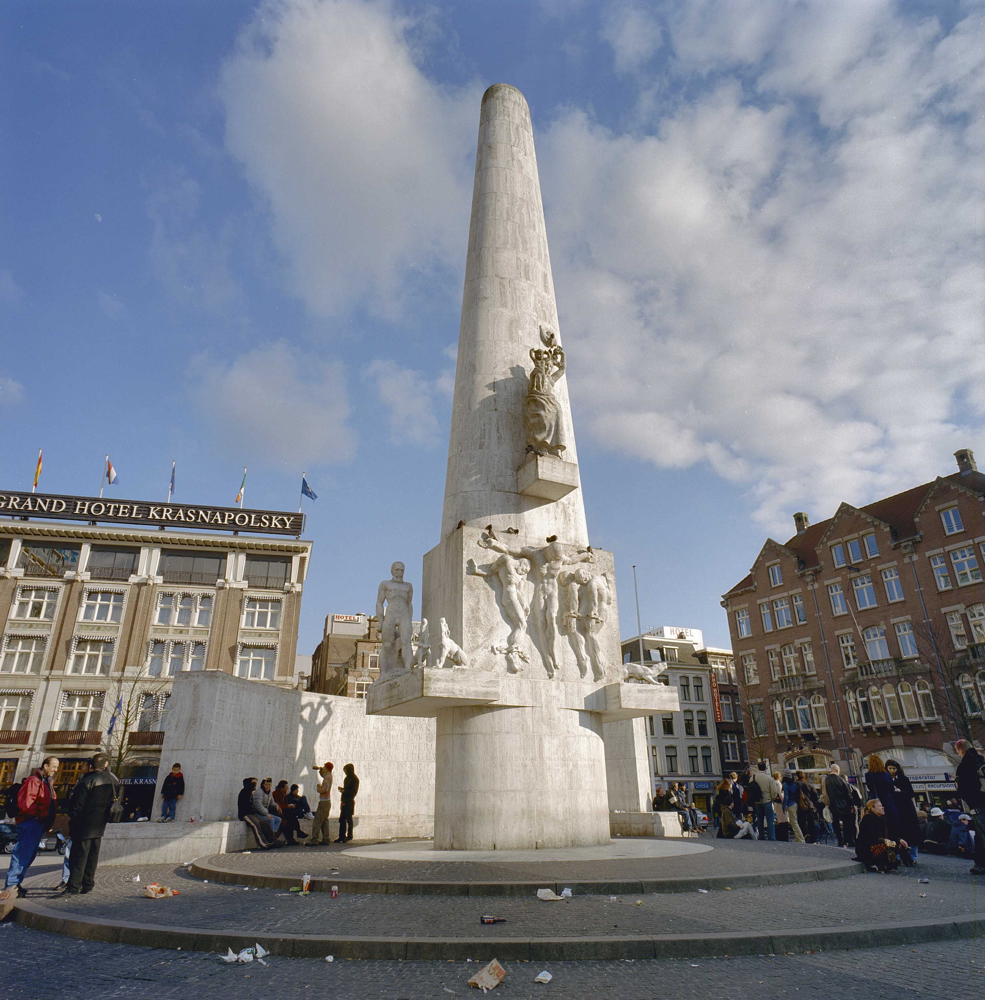
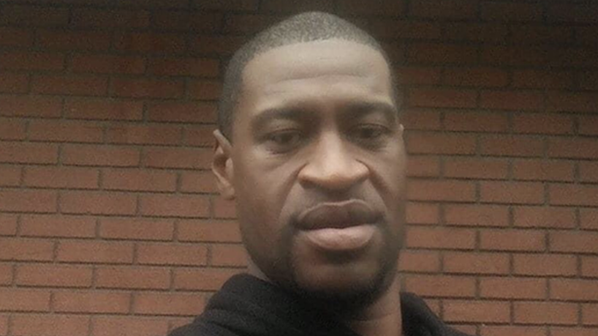
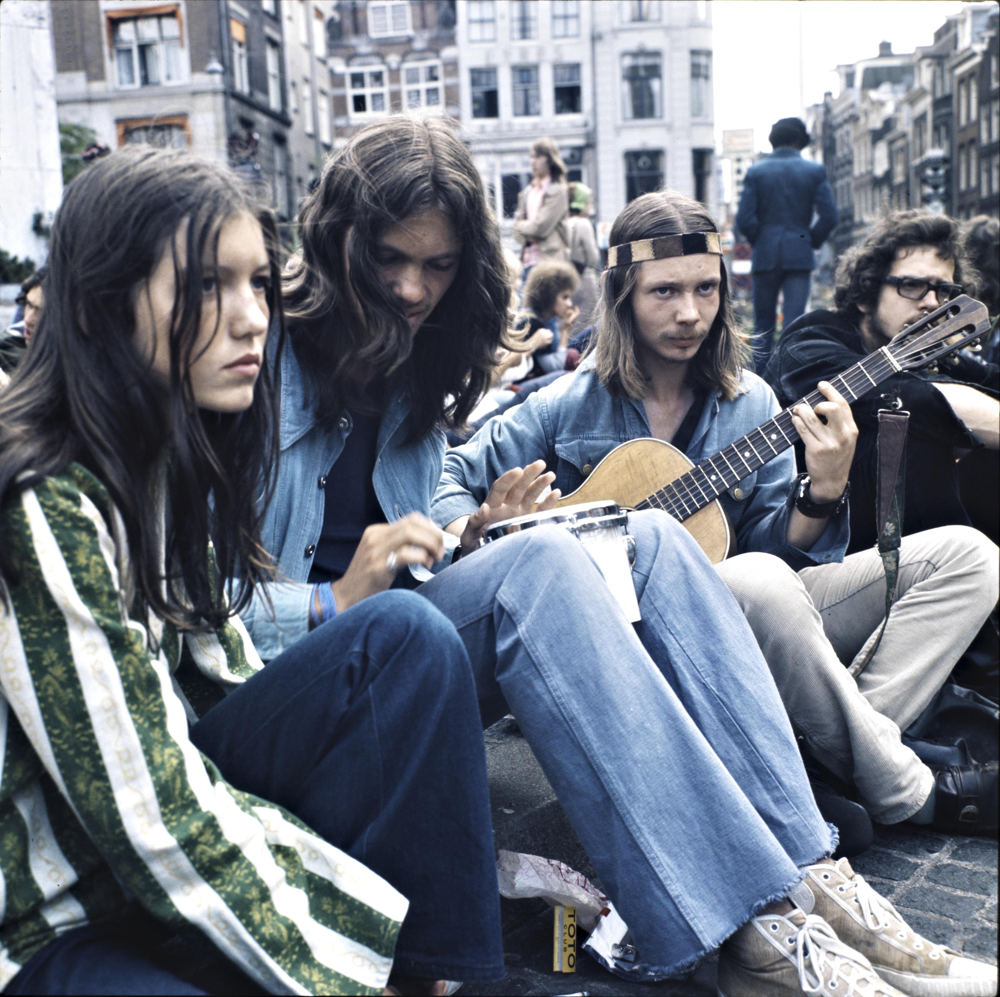
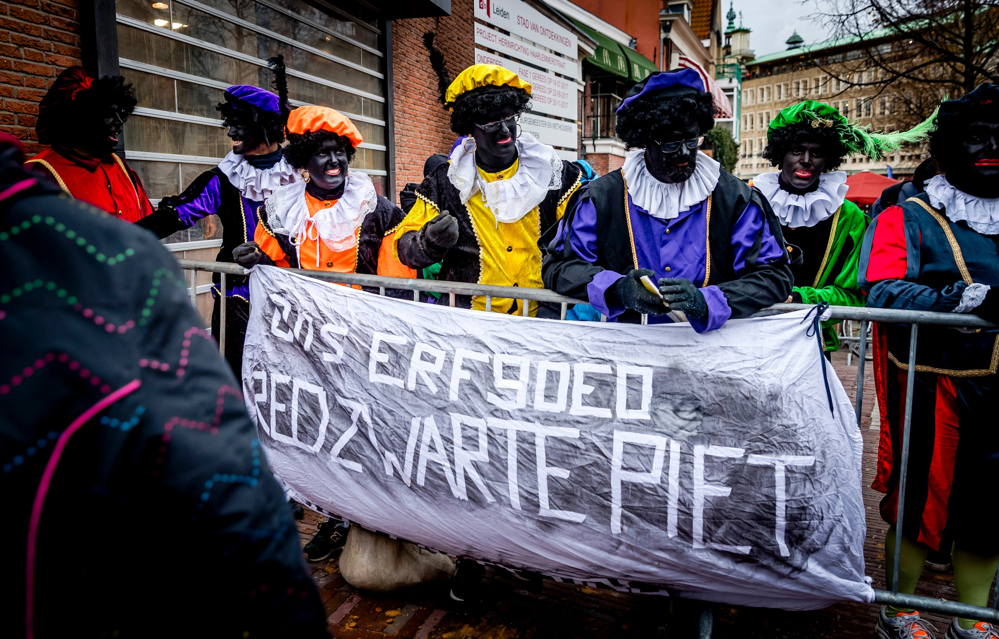

Tijdens de coronapandemie vonden op de Dam protesten plaats tegen coronamaatregelen. Sommige demonstraties trokken veel mensen, waardoor discussie ontstond over de naleving van de coronaregels.



